أهلاً، ومع السلامة يا ماما وبابا
نستقبل الأطفال عند الباب ويبدأون يومهم بلعب حر تحت الإشراف.
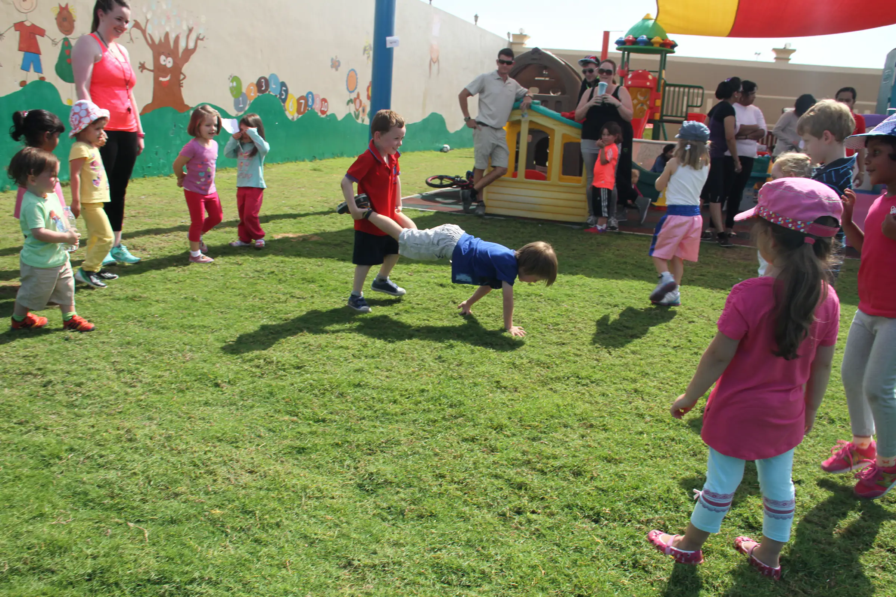
حضانة ورعاية أطفال بالمنهج البريطاني EYFS في الحمرا، الجزيرة، رأس الخيمة. نستقبل الأطفال من عمر 3 أشهر حتى مرحلة التأسيس بعمر 4 سنوات، من الاثنين إلى الجمعة، من 7 صباحاً حتى 6 مساءً.
بيتٌ ثانٍ لأطفال رأس الخيمة: مكان سعيد وآمن، فيه فريق يحب الأطفال من قلبه.
نتبع منهج المرحلة التأسيسية البريطاني (EYFS) ونضيف عليه قيمنا وبرامجنا الخاصة. يتعلم الطفل باللعب والاستكشاف داخل الصف وخارجه، ونتابع تقدّم كل طفل ونشاركه مع الأهل أولاً بأول.
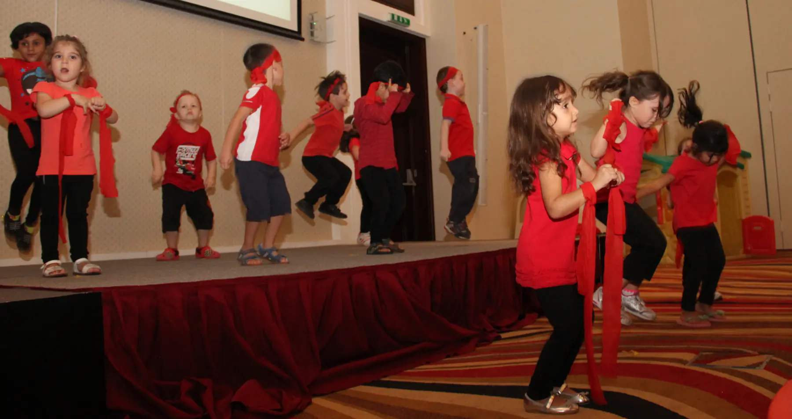
لكل صف اسم من عالم القراصنة. وكل الصفوف تتبع موضوع الأسبوع نفسه، كلٌ بما يناسب عمره.
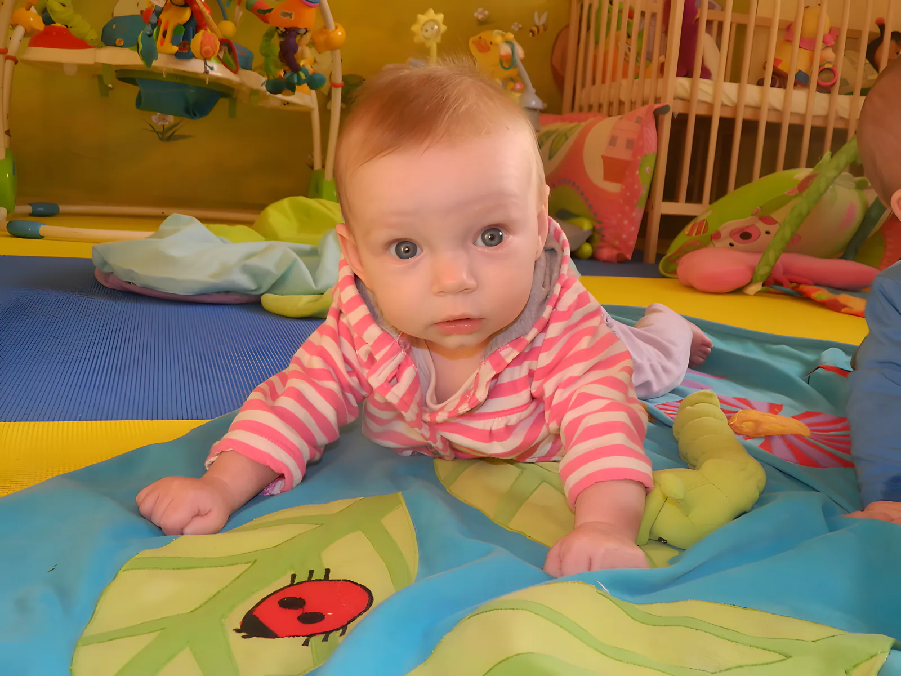
صف الرضّع · من 3 أشهر حتى المشي
أرضيات ناعمة وألعاب في متناول اليد، ووقت مخصص للحضن. الرضاعة والنوم على نفس روتين البيت.
صف الرضّع →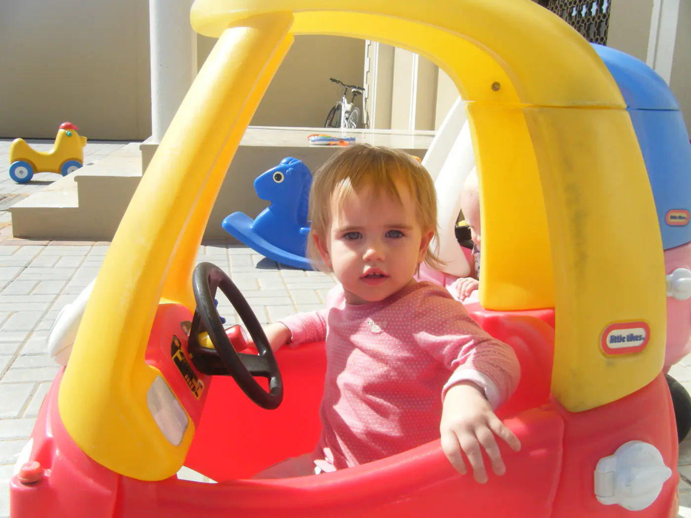
صف الدارجين · من المشي حتى سنتين
صف صغير من 8 أطفال. غناء، ولعب بالرمل والماء، وتركيز خاص على أول الكلمات.
صف الدارجين →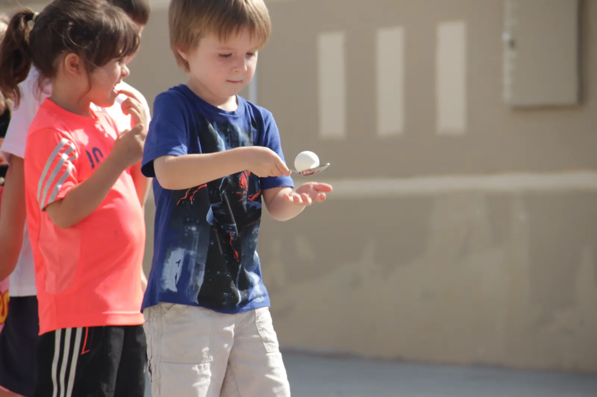
مجموعة اللعب · تمهيد للروضة
الإصغاء والمهارات الحركية وتكوين الصداقات باستقلالية، في جو آمن ودافئ.
مجموعة اللعب →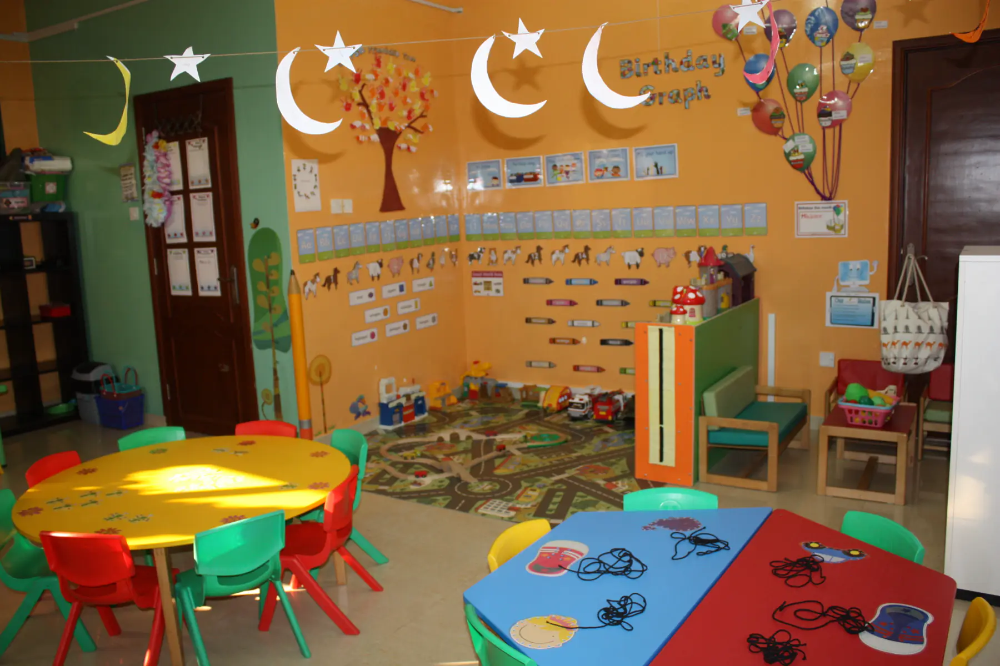
الروضة · من سنتين إلى 3 سنوات
حلقة الصباح، موضوع الأسبوع، Jolly Phonics، ولعب في الخارج مرتين كل صباح.
الروضة →التأسيس 1 · من 3 إلى 4 سنوات
برنامج أكثر تنظيماً لبلوغ أهداف التعلم المبكر قبل الانتقال إلى المدرسة.
التأسيس →جدولنا النموذجي لأطفال الروضة والتأسيس، كما هو معلّق على جدار الصف.
نستقبل الأطفال عند الباب ويبدأون يومهم بلعب حر تحت الإشراف.
الحضور، أغنية صباح الخير، الحروف والأرقام والأشكال والألوان، وأول نظرة على موضوع الأسبوع.
لعب في الخارج إذا سمح الجو، ومرة ثانية الساعة 11:30. وحصة رياضة مرة في الأسبوع: جري وكرة قدم وسباقات.
فنون وأشغال يدوية، موسيقى وحركة، وعرض وحديث. وبعد الغداء نشاط إضافي: رقص، آلات موسيقية، خَبز أو مكتبة.
نرتّب الصف، نلبس الأحذية، نجهّز الحقائب، ونقرأ قصة بانتظار الأهل. والرعاية النهارية مستمرة حتى 6 مساءً.
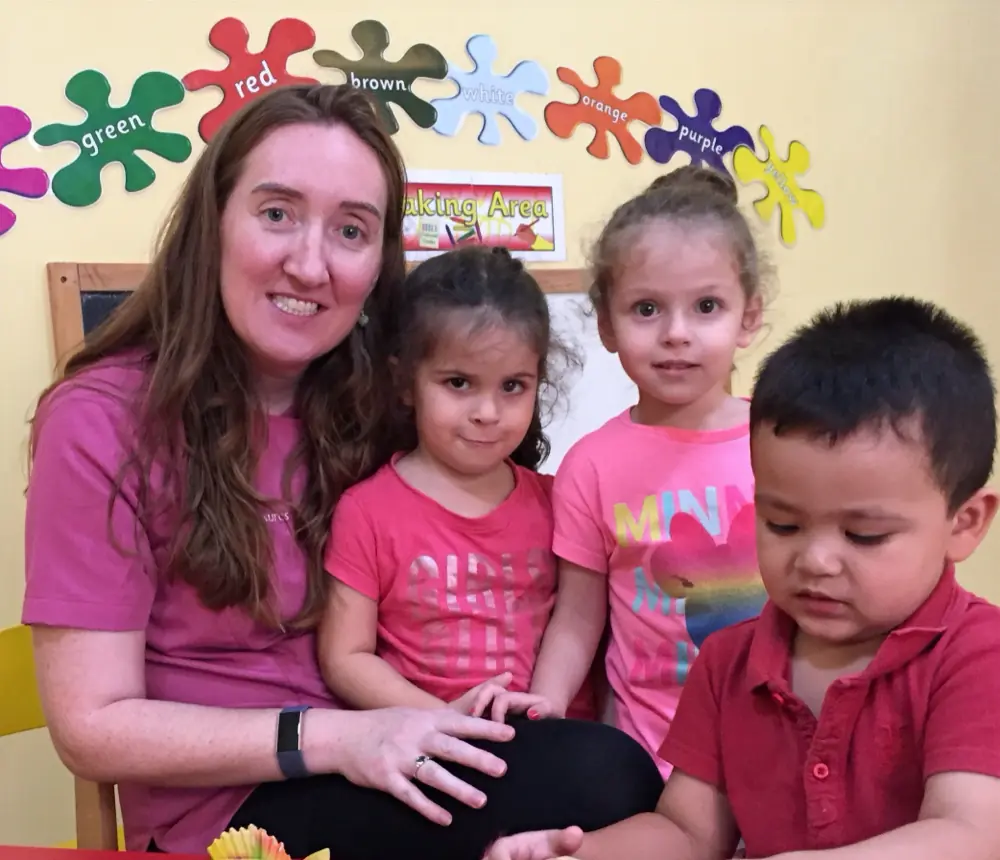
مس جيما (Miss Gemma)المالكة ومديرة الحضانة · ماجستير في تعليم الطفولة المبكرة من جامعة شيفيلد
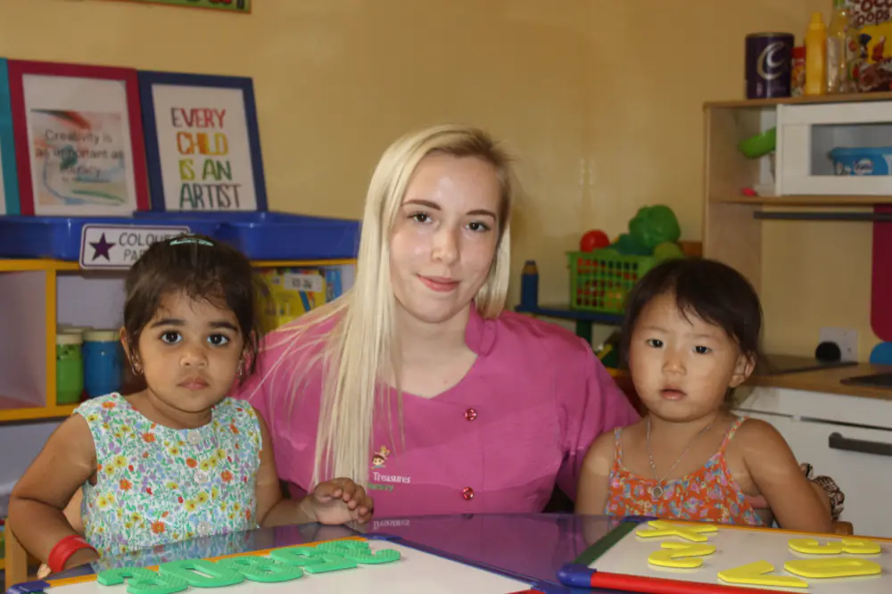
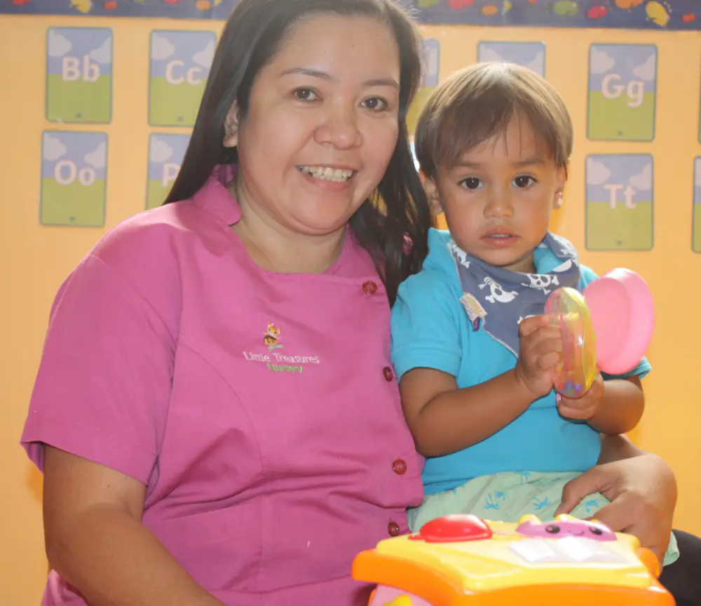
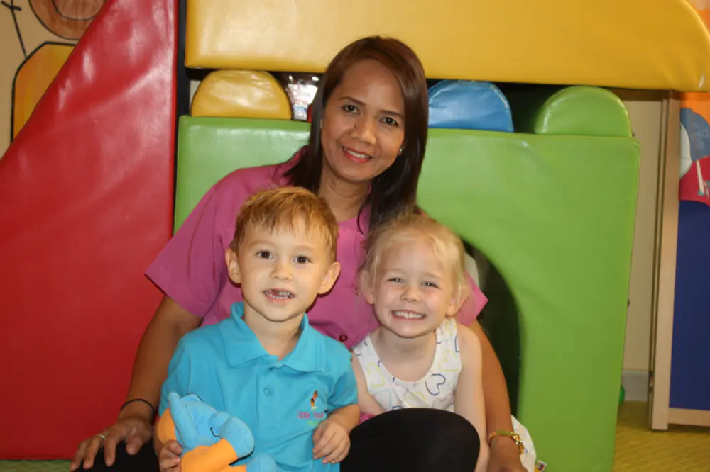
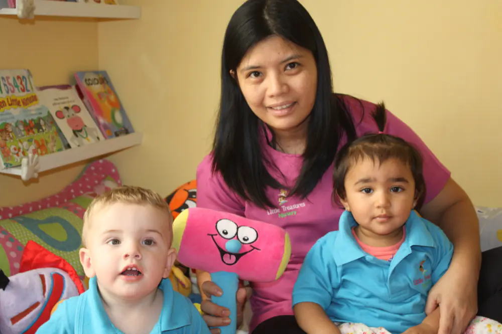
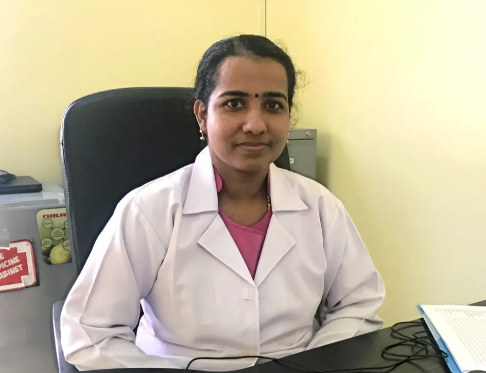
تُمنح المقاعد حسب الأماكن المتوفرة. أهلاً بزيارتكم في أي وقت، ويُفضّل حجز موعد إذا رغبتم بجولة مع مديرة الحضانة.
للتسجيل نحتاج
بعد تأكيد المقعد
بين الجزيرة وقرية الحمرا، رأس الخيمة
ص.ب 85641، الحمرا، الجزيرة. المبنى ظاهر من الشارع الرئيسي.
| الاثنين | 7 ص – 6 م |
| الثلاثاء | 7 ص – 6 م |
| الأربعاء | 7 ص – 6 م |
| الخميس | 7 ص – 6 م |
| الجمعة | 7 ص – 6 م |
| السبت والأحد | مغلق |